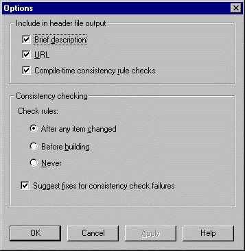
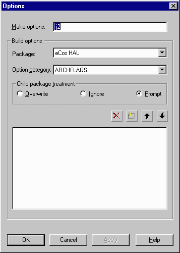
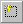

You can use the Tools->Options menu item to change the way the Configuration Tool operates on the data and the settings that are applied to builds.

The first group of controls affects the output in the header files:
Brief Description
Check this item if you wish a brief description of each item to be included as a comment in the header file. The brief description will be displayed in the floating help window.
URL
Check this item if you wish the documentation URL for each item to be included as a comment in the header file.
Compile-time consistency rule checks
Check this item if you wish to output compile-time checks (using #error preprocessor directives) to enforce the consistency rules applied within the Configuration Tool.
The second group of controls affects the way in which consistency rule checking is carried out:
After any item changed
Select this option if you want consistency rules to be checked when changing the value of any configurable item. Note that only rules relating to the item being changed are checked.
Before building
Select this option if you wish to defer rule checking until you build.
Never
Select this option if you wish to suppress rule checking entirely. Note that this option is unsafe, as it may lead to be generation of inconsistent configurations that may fail to build or may lead to unexpected results at run-time.
Suggest fixes for consistency check failures
Select this option if you wish the Configuration Tool to suggest ways in which a consistency check failure may be resolved. Only relatively simple consistency check failures may be resolved in this way.

The Build->Options dialog controls the options used for building the sources.
The Make options control determines options to be passed to make. By default, this control contains -j<n> where <n> is the number of processors installed on the host machine.
The Package control selects a package to which the build options will apply. If the package selected is the parent of other packages, the controls in the "child package treatment" group will be enabled.
The Option Category control determines the category of flag being set.
The Child Package Treatment group determines how options should be propagated to descendants of the current package:
Overwrite: changes will overwrite corresponding options in child packages. New options will be added to child packages and deleted options will be removed.
Ignore: changes will not affect child packages
Prompt: you will be prompted for the action to take for each option
The dialog toolbar buttons allow you to add, remove, and move options:
To delete an option, click:
To add an option, click: 
To move an option up, click:
To move an option down, click:
To modify an option, double-click it. The option may then be edited in place.